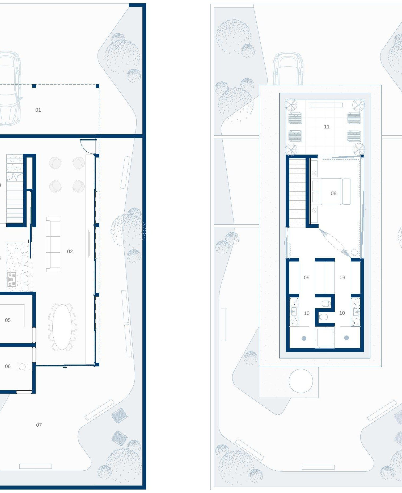

05
Casa FS

Pensar em uma casa para si, sendo arquiteto ou não, é um exercício contínuo e de maturidade. Observar constantemente como habitamos, e como o ambiente tem a capacidade de reforçar ou dificultar comportamentos, nos entrega um programa detalhado — e, como arquiteto, conseguimos refletir muito além da organização de gavetas.
Daí vieram os ensaios anuais, onde imagino a casa ideal para minha vida atual. A resposta de 2025 é uma casa onde o social e o íntimo se separam por pavimentos, e a área de serviços ocupa o “coração da casa”, com acesso facilitado à entrada, à sala, à cozinha, ao jardim e aos quartos.
“Entre o corpo e a casa: um exercício anual de autoconhecimento e projeto.”
Processo
Do croqui ao executivo.
